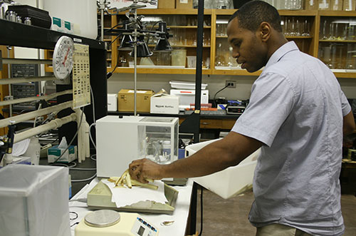

Ethan McBrayer: Biological Science Major
Posted April 28, 2015

Growing up through 4-H brought Ethan McBrayer to UGA, but the tradition and legacy has kept him here. Ethan has been able to take advantage of the college's multiple campuses. As a Tifton campus student, he enjoyed taking classes at the hub of agricultural research. Last summer he transferred to the Athens campus, and since then he's been involved with the UGA Chapter of the American Medical Student Association, a men's bible study at Prince Avenue Baptist Church known as J-group and the UGA Bug Dawgs service-learning outreach group.
Ethan plans to apply to medical schools and become a primary care physician in a rural community. He was one of 10 students selected to participate in the Pathway to Medical School Internship, which is sponsored by the Southwest Georgia Area Health Education Center. Ethan will spend a month in Albany, Ga., shadowing primary care physicians and conducting research on an assigned research project.
Q&A with Ethan
What is the one thing about yourself that sets you apart from other students?
Dedication. I believe education can offer me a window with a wealth of opportunities waiting on the other side. Therefore, school is my world. I always try to take the extra steps needed in order to make sure I completed the task to the best of my ability. I believe dedication calls for sacrifices, and I am more than willing to make them in order to achieve access to the other side of my window of opportunity.
What is your favorite thing to do on campus?
On campus I really enjoy talking with my peers. I am a talker and love just catching up with everyone to see how their week is going and what is going on with them on the weekend.
What made you decide to attend UGA?
Tradition and legacy. The University of Georgia is rooted in tradition that every Bulldawg knows about. Whether its how to root for the players in red and black, what pitch to start on when singing Glory, grabbing some coffee from Jitteries' when studying for that Chemistry exam, or simply walking around the arch to downtown, UGA is full of its tradition. As a kid, it was always a dream of mine to be able to take part in these. In addition to tradition, it has a legacy of preparing men and women to be successful individuals in the work force. I believe this university creates human capital that will move mountains. As a pre-med student, I have a passion for moving mountains in the medical field and I believe this university will prepare me.

I chose to attend the University of Georgia Tifton campus because of small class sizes, which offers me more of a personal relationship with my professors. The ability to just walk into my professor's office without having to make an appointment through email is a luxury that I cherish daily. I also enjoy getting to know the students in my classes. I feel as if I am part of a family each day when attending class.
What was the thing that surprised you most about UGA?
As a Tifton campus student, I am in the heart of agricultural research that is literally changing the world. I guess my surprise is rooted in just how renowned the research is. I remember how exciting it was to hear how the World Cup was played on turfgrass invented by a UGA Tifton scientist. You feel like you are part of something big when you see how your school is impacting parts of the world thousands of miles away from where you are.
What do you like best about CAES?
Being accustomed to a small town setting really impacted my decision of which school within the University of Georgia to attend. The College of Ag and Environmental Sciences was my top choice because of the small, personal environment that was offered to me. I felt I would be able to establish a more personal relationship with my professors within CAES.
I also felt like I had something in common with CAES the moment I began college, and this commonality was a passion to impact the community in a positive way. I knew CAES would give me this chance like it had always done while growing up as a 4-H'er.
What's the strangest or coolest thing that's happened to you at UGA?
The strangest yet most interesting event, which occurred at UGA, would be the abortion exhibit that was given one day outside of Tate. I had never really experienced such a radical exhibit before, and it was very interesting to hear the arguments, which ensued from livid spectators. The other dissenting opinions on the controversial exhibit really challenged my personal beliefs and it was a good feeling. I enjoyed seeing people take a stand for their beliefs whether it is for or against the exhibit.
Have you been involved in any organizations or clubs at UGA that you think others should be a part of?
As a UGA Tifton student, the Collegiate Ambassadors program was a very big part of my life. In this organization I was able to be a part of something bigger than myself. The best part of this club is that it gave me the chance of talking to other college students and prospective college students about programs offered within the College of Ag or simply why they should choose CAES to be part of their college career. Personally, I recommend this organization because of its preparation for the future. You'll learn how to improve interpersonal communication, build a resume for a future career, work in a group, plan an event or simply be a better leader.
Why did you choose your major?
At the time of applying to college I knew two things: I was going to take the Pre-Med route, and I wanted to attend the College of Ag and Environmental Sciences. The winning major for this was Biological Science because of its preparation to applying to medical school as well as passing the Medical College Admissions Test. This major would also offer me a plethora of opportunities in research, which is a huge component of your portfolio when applying to medical school.
Which CAES instructor do you value the most or has been most influential?
This instructor would be Dr. Diana King. As a student in both her Ag Issues and Leadership and Service class I have really enjoyed getting to know her. She has challenged my opinions and really helped me learn how to put my opinions publicly. I have never been part of a class orchestrated in this manner and I love it. I see the joy my professor has when teaching, and it really makes me respect her even more. This instructor gets to know her students and really encourages them to succeed. She is a great listener and is always willing to be fair and work with you. Dr. King is a rare find and I have been blessed to have my path cross with hers.
What's your favorite class and why?
I have really enjoyed ALDR 4600 on ag issues. This course has been very enlightening on the topic of obesity and nutrition. The course has a global aspect to it where the class interacts with classes at other universities around the world. The experience of being able to talk about obesity, a global epidemic, with people around the world is very exciting. I have really enjoyed being able to share with other peers in my class about this issue. My knowledge on the negatives of this epidemic has grown tremendously as well.
Best advice for incoming freshmen?
Forget about high school and how things were during those years. College is in a category of it's own. It's when you will learn who you are as a person. The times to come will be challenging, but if you prepare yourself and hold your head high it can be bright, years of your life that never will be forgotten. Study hard because it does count, and it can determine your quality of life in the future. Get plugged into organizations and make an impact. This gives you the once in a lifetime feeling that you are part of something bigger than yourself.
If it wasn't for CAES…
I wouldn't be who I am. CAES brought me out of my shell at a young age and taught me how to walk into the world with a confident head on my shoulders. Therefore, CAES gave me a sense of courage at a young age to step outside my comfort zone. At the academic level CAES is molding me into an intellectual thinker that can view a problem and discern the solution. This is a concept that must be achieved in my world due to my endeavors of wanting to become a doctor.
About Ethan
- Name:
- Ethan McBrayer
- Hometown:
- Tifton, Ga.
- Major:
- Biological Science
- Minor:
- Entomology
- Class:
- 2014
- Campus:
- Tifton, Athens